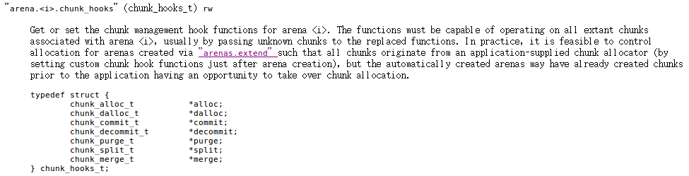
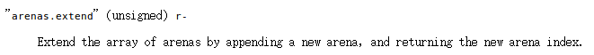
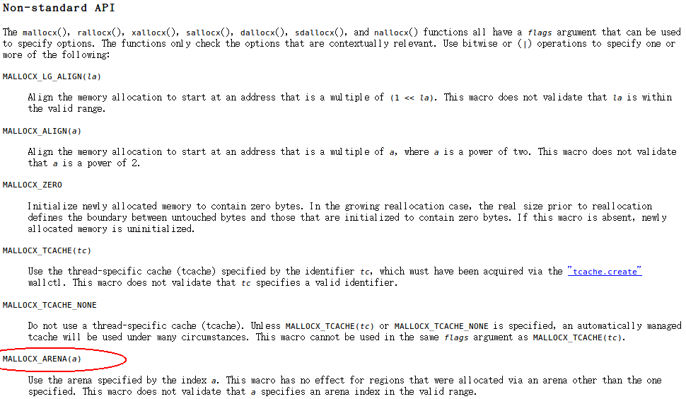
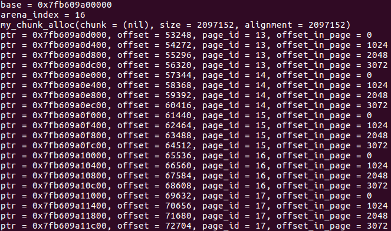

最终我自己写的分配器——在《面向非易失存储器（NVM）的内存分配器——libnvmalloc》中——被弃用了，以安全为由。于是必须得使用libmemkind，这是Intel官方的一个内存分配器函数库，为pmem文件系统设计的。从一开始，我就知道这个库是基于jemalloc的。但是一直不知道具体它是怎么让jemalloc乖乖地在指定的内存空间上管理的。
================================阶段一：jemalloc提供的接口================================
于是我就随便下载了jemalloc-4.0.3的源码包，先去看了doc/jemalloc.html。在阅读jemalloc的doc/jemalloc.html时，有一段引起了我的兴趣：

也就是说，我可以向jemalloc注册一组函数，来控制chunk的申请/释放行为。我知道，一个arena就像一个命名空间，不同的arena管理不同的内存区域。但是arena毕竟只是一个虚的概念，真正承载用户数据的是chunk。现在能够指定chunk怎么申请、怎么释放，那么我就能控制chunk的内存空间的来源。文中也说了，已经自动创建的arena可能已经先于用户注册自定义函数而申请了一些chunk，那么这些chunk肯定是从DDR里面分来的。
为了确保我所使用的内存空间来自我指定的地方，那么我就需要新建arena，然后给该arena绑定自定义的chunk hooks，来自定义chunk的行为。文中也提到，arena可以通过“arenas.extend”创建。于是我跳到那一段：

那么在用户通过诸如je_malloc()函数申请内存时，又如何确保内存来自这个新建的arena呢？我有在文档中搜寻，果然找到了：

因此大致思路有了：
- 在初始化时，使用je_mallctl("arenas.extend",...)新建一个arena，并且得到新的arena的编号arena_index;
- 填充一个chunk_hooks_t结构体，并且使用je_mallctl("arenas.<arena_index>.chunk_hooks",...)为这个arena注册自定义chunk行为;
- 在之后的分配中，使用je_mallocx(size, MALLOCX_ARENA(arena_index))来要求jemalloc从该arena中分配空间。
================================阶段二：libmemkind利用该接口================================
原来jemalloc都留好了现成的接口了，我猜libmemkind就是这么实现的吧？为了验证猜想，我下载了libmemkind v1.5.0，并开始查看其源码。果然，我发现了这么一条调用链：
memkind_pmem_create(kind, ops, name); // 用户调用它，创建一个memkind_t
memkind_arena_create_map(kind, &pmem_chunk_hooks); // 使用pmem_chunk_hooks
// something
unsigned i = 0;
for(i=0; i < kind->arena_map_len; i++) {
//create new arena with consecutive index
unsigned arena_index;
err = jemk_mallctl("arenas.extend", (void*)&arena_index, &unsigned_size, NULL, 0);
if(err) {
goto exit;
}
//store index of first arena
if(i == 0) {
kind->arena_zero = arena_index;
}
//setup chunk_hooks for newly created arena
char cmd[64];
snprintf(cmd, sizeof(cmd), "arena.%u.chunk_hooks", arena_index);
err = jemk_mallctl(cmd, NULL, NULL, (void*)hooks, chunk_hooks_t_size);
if(err) {
goto exit;
}
arena_registry_g[arena_index] = kind;
}
也就是说，新建了多个arena，并且为他们注册了pmem_chunk_hooks。而这个pmem_chunk_hooks的就是一个chunk_hooks_t结构体，定义了怎么从pmem文件申请/释放chunk：
void *pmem_chunk_alloc(void *chunk, size_t size, size_t alignment,
bool *zero, bool *commit, unsigned arena_ind)
{
int err;
void *addr = NULL;
if (chunk != NULL) {
/* not supported */
goto exit;
}
struct memkind *kind;
kind = get_kind_by_arena(arena_ind);
if (kind == NULL) {
return NULL;
}
err = memkind_check_available(kind);
if (err) {
goto exit;
}
addr = memkind_pmem_mmap(kind, chunk, size);
if (addr != MAP_FAILED) {
*zero = true;
*commit = true;
/* XXX - check alignment */
} else {
addr = NULL;
}
exit:
return addr;
}
bool pmem_chunk_dalloc(void *chunk, size_t size, bool commited,
unsigned arena_ind)
{
/* do nothing - report failure (opt-out) */
return true;
}
bool pmem_chunk_commit(void *chunk, size_t size, size_t offset, size_t length,
unsigned arena_ind)
{
/* do nothing - report success */
return false;
}
bool pmem_chunk_decommit(void *chunk, size_t size, size_t offset, size_t length,
unsigned arena_ind)
{
/* do nothing - report failure (opt-out) */
return true;
}
bool pmem_chunk_purge(void *chunk, size_t size, size_t offset, size_t length,
unsigned arena_ind)
{
/* do nothing - report failure (opt-out) */
return true;
}
bool pmem_chunk_split(void *chunk, size_t size, size_t size_a, size_t size_b,
bool commited, unsigned arena_ind)
{
/* do nothing - report success */
return false;
}
bool pmem_chunk_merge(void *chunk_a, size_t size_a, void *chunk_b,
size_t size_b, bool commited, unsigned arena_ind)
{
/* do nothing - report success */
return false;
}
static chunk_hooks_t pmem_chunk_hooks = {
pmem_chunk_alloc,
pmem_chunk_dalloc,
pmem_chunk_commit,
pmem_chunk_decommit,
pmem_chunk_purge,
pmem_chunk_split,
pmem_chunk_merge
};
可以看到，在pmem_chunk_alloc时，使用了memkind_pmem_mmap()来分配空间。那么再看这个memkind_pmem_mmap()函数：
MEMKIND_EXPORT void *memkind_pmem_mmap(struct memkind *kind, void *addr, size_t size)
{
struct memkind_pmem *priv = kind->priv;
void *result;
if (pthread_mutex_lock(&priv->pmem_lock) != 0)
assert(0 && "failed to acquire mutex");
if (priv->offset + size > priv->max_size) {
pthread_mutex_unlock(&priv->pmem_lock);
return MAP_FAILED;
}
if ((errno = posix_fallocate(priv->fd, priv->offset, size)) != 0) {
pthread_mutex_unlock(&priv->pmem_lock);
return MAP_FAILED;
}
result = priv->addr + priv->offset;
priv->offset += size;
pthread_mutex_unlock(&priv->pmem_lock);
return result;
}
从它的代码逻辑可以看出：该函数会试图从pmem文件中分配[offset, offset + size)这么一段空间。为了确保空间能有物理空间对应，使用了posix_fallocate()对文件“打洞”。成功后，就把该段空间分配出去，并且offset增加size。可以看到，libmemkind只能不断向后分配空间，但是却不能释放空间（当然，这不是什么大问题）。
================================阶段三：自己写程序验证================================
libmemkind毕竟还有很多其他的内容，并不能很好的凸显jemalloc提供的接口的使用方式。为了验证我的想法确实可行，还是自己写程序最最靠谱。我写了一个只有140行的测试程序，但是可以很好地显示出，jemalloc确实在管理我模拟的一段空间。
test.c
#include <stdio.h>
#include <jemalloc.h>
#include <sys/mman.h>
#define PAGE_SIZE 4096
// 待管理的空间大小
size_t mem_size = 1 << 30;
// 待管理的空间的首地址
void* base;
// 已经分配出去的大小
size_t allocated = 0;
//+++++++++++++++++++++++++++++HOOK BEGIN+++++++++++++++++++++++++++++
// 从这里开始定义jemalloc管理chunk的hook函数，自定义chunk管理行为
// 可以参考jemalloc/doc/jemalloc.html中arena.<i>.chunk_hooks一段
// 当jemalloc发现chunk不够用了，会callback此函数索要空间
// chunk大小在编译时配置（原版jemalloc-4.0.3默认人2M，libmemkind配置为4M）
void* my_chunk_alloc(void *chunk, size_t size, size_t alignment, bool *zero, bool *commit, unsigned arena_index)
{
printf("my_chunk_alloc(chunk = %p, size = %lu, alignment = %lu)\n", chunk, size, alignment);
if(size % alignment)
return NULL;
if(allocated + size > mem_size)
return NULL;
if(chunk && chunk != base + allocated)
return NULL;
void* addr = base + allocated;
allocated += size;
return addr;
}
// 返回true表示该内存可以继续使用
bool my_chunk_dalloc(void *chunk, size_t size, bool commited, unsigned arena_index)
{
return true;
}
// 返回false表示内存充足
bool my_chunk_commit(void *chunk, size_t size, size_t offset, size_t length, unsigned arena_index)
{
return false;
}
// 返回true表示该内存即使释放了，也是与物理内存对应的，可以重用
bool my_chunk_decommit(void *chunk, size_t size, size_t offset, size_t length, unsigned arena_index)
{
return true;
}
// 返回true表示该段地址空间被重用后不会清空
bool my_chunk_purge(void *chunk, size_t size, size_t offset, size_t length, unsigned arena_index)
{
return true;
}
bool my_chunk_split(void *chunk, size_t size, size_t size_a, size_t size_b, bool commited, unsigned arena_index)
{
return false;
}
bool my_chunk_merge(void *chunk_a, size_t size_a, void *chunk_b, size_t size_b, bool commited, unsigned arena_index)
{
return false;
}
chunk_hooks_t my_chunk_hooks =
{
.alloc = my_chunk_alloc,
.dalloc = my_chunk_dalloc,
.commit = my_chunk_commit,
.decommit = my_chunk_decommit,
.purge = my_chunk_purge,
.split = my_chunk_split,
.merge = my_chunk_merge,
};
//-----------------------------HOOK END-----------------------------
int main()
{
// 模拟一段NVM空间，或者任何一段用户待管理的空间（这里有1GB)
base = mmap(0, mem_size, PROT_READ | PROT_WRITE, MAP_ANONYMOUS | MAP_PRIVATE, -1, 0);
if(base == MAP_FAILED)
{
printf("mmap() failed!\n");
return 1;
}
printf("base = %p\n", base);
// 用je_mallctl('arenas.extend')命令创建一个arean，
// 参考jemalloc/doc/jemalloc.html中arenas.extend一段
unsigned arena_index;
size_t unsigned_size = sizeof(unsigned int);
if(je_mallctl("arenas.extend", (void*)&arena_index, &unsigned_size, NULL, 0))
{
printf("je_mallctl('arenas.extend') failed!\n");
return 1;
}
printf("arena_index = %u\n", arena_index);
//为这个arena绑定我们自定义的chunk hook，于是该arena就会按我们的方式去申请/释放chunk
// 参考jemalloc/doc/jemalloc.html中arena.<i>.chunk_hooks一段
char cmd[64];
sprintf(cmd, "arena.%u.chunk_hooks", arena_index);
if(je_mallctl(cmd, NULL, NULL, (void*)&my_chunk_hooks, sizeof(chunk_hooks_t)))
{
printf("je_mallctl('%s') failed!\n", cmd);
return 1;
}
// 接着试试分配内存，使用je_mallocx()、je_callocx()等以x结尾的函数，指定MALLOCX_ARENA(arena_index)，
// 那么就会在我们创建的arena中分配内存
for(size_t i = 0; i < 1024; i++)
{
void* ptr = je_mallocx(1024, MALLOCX_ARENA(arena_index));
// 算一算偏移量
size_t offset = ptr - base;
// 是待管理空间的第几个page
size_t page_id = offset / 4096;
// page内偏移多少
size_t offset_in_page = offset % 4096;
printf("ptr = %p, offset = %lu, page_id = %lu, offset_in_page = %lu\n", ptr, offset, page_id, offset_in_page);
}
if(munmap(base , mem_size) != 0)
{
printf("munmap() failed!\n");
return 1;
}
return 0;
}
运行结果如下：

可以看到my_chunk_alloc()被回调，并且之后分配的地址都在该2M大的chunk内。